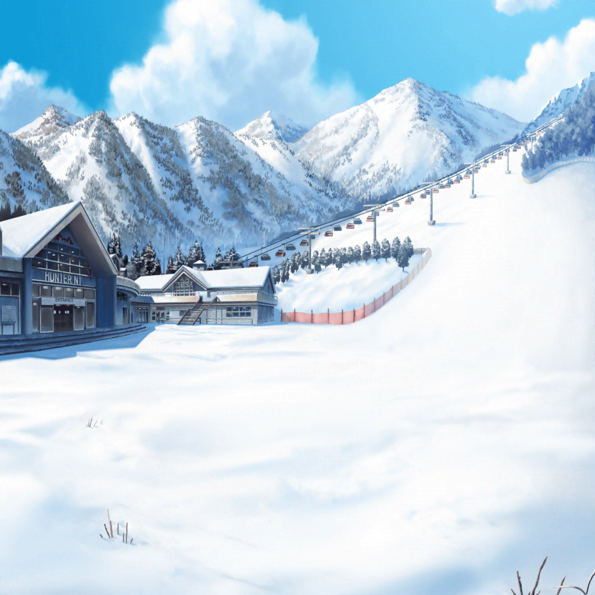

ゲレンデ
はぐみ
麻弥さん、ちょっと休憩しようよっ！
麻弥
あ、はい〜。すみません、ジブン物覚えが悪くて
はぐみ
ううん、全然大丈夫っ！
麻弥
ありがとうございます……
それにしても、はぐみさんは本当に運動がお上手ですよね。
どうしてそんなにお上手なんですか？
はぐみ
あんまり考えたことないけど、はぐみの家は、
とーちゃんも兄ちゃんもスポーツが得意だから！
麻弥
ええ！？
すごいですね……スポーツ一家なんですか？
はぐみ
ううん、ただ体を動かすのが好きなだけ。
ちっちゃい頃から、家族でキャンプしたり、
海に泳ぎに行ったりしたよ
麻弥
なるほど……だからスノボもそんなに上手なんですね。
ジブンにスキーを教えてくれるということは、
スキーもできるんですよね？
はぐみ
うんっ！ スキーもスノボもできるよ！
麻弥
すごいですね……うらやましいです
はぐみ
でも、はぐみも最初は、教わりながらやったよ？
麻弥
え？ お父さんにですか？
はぐみ
ううん、初めてとーちゃんとゲレンデに来たときに、
短い間だけど、スキー教室に通ったんだ。滑り方だけ覚えて、
あとはスキーもスノボも滑ってるうちに慣れた！
麻弥
……そんな短期間で覚えられるものなんですね、スキーって
はぐみ
麻弥さんもコツさえ覚えれば大丈夫だよっ！
今日中に滑れるようになると思う！
麻弥
うう……ジブンはあんまり自信ないです……
はぐみ
どうして？
麻弥
ジブンは、子供の頃からあまり外に出て遊ぶほうじゃなかったので
……運動が得意じゃないんです。
家族も休みの日は家でのんびりするようなタイプですし……
はぐみ
そうなんだ……はぐみの家と全然違うんだね
麻弥
はぐみさんは、スノボやっていて、
転んだりするのは怖くないんですか？
はぐみ
全然！ 楽しいよ？
麻弥
楽しい……？
はぐみ
だって雪の上にばたっ！ って倒れるなんて、
スノボのときくらいしかないもん！
麻弥
でも、転んだら痛いですよね？
はぐみ
痛いけど、次は転ばないようにしようって思うのも楽しいんだ！
麻弥
なるほど……他のスポーツでもそうなんですか？
はぐみ
うんっ！ スポーツやってると
だんだん体がなじんでくるような気がするから
麻弥
なじむ……というのは、どういう……？
はぐみ
うーんと……ソフトボールだったら、こうボールを投げるときに、
バッてやるかシュッてやるかで全然違うボールになるんだけど、
それがわかるようになってくるとか……
麻弥
バッとシュッ……？
はぐみ
えっと、んー、こういう感じなんだけど……
なんて言ったらいいのかわかんない！
麻弥
ええと、どのくらいの勢いで腕を振ってどこでボールを放すか、
それによってどんなボールを投げられるのか、
練習しているうちにわかってくるってことでしょうか？
はぐみ
あ、そうそう、そんな感じ！
あとは、ボールの縫い目にどんな感じで指をひっかけると、
ボールがどうなるか、とか！ だんだんわかってくるんだよ！
麻弥
指先の感覚まで、練習で覚えていくんですね……
なるほど。確かにドラムを叩くときに、楽器のどこを
どう叩くかで出る音が違いますね。それと一緒でしょうか？
はぐみ
あ、そうかもっ！
そういうところは似てると思う！
麻弥
なるほど……ちょっとわかります。
やっぱりスポーツも練習が大切なんですね。
苦手だと嫌がっていたら、できるようにならないんですよね……
はぐみ
そうだよ！
だからスキーもいっぱい滑っていっぱい転んで、
それで覚えていけばいいと思う！
麻弥
そうですよね。
ジブン、ちょっと怖がりすぎていたのかもしれません！
やっぱりはぐみさんはすごいです！
はぐみ
麻弥さんだってすごいよっ！
はぐみの言いたいこと分かってくれるし、
全部言ってくれる！
麻弥
へ？ そうですか？
はぐみ
うん！ ……はぐみ、あんまり上手にしゃべるの得意じゃないから
麻弥
そんなことないですよ。
はぐみさんはこうやって、
ジブンにスキーを教えてくれているじゃないですか
はぐみ
え……そうかな？
はぐみ、ちゃんと教えられてる？
麻弥
はい！ はぐみさんがいなかったら、
ジブンは途中で嫌になっていたかもしれません
はぐみ
……そっか……えへへ
麻弥
ジブンも何とかちゃんと滑れるようになりたいので、
この後もよろしくお願いします、はぐみさん！
はぐみ
うん、もちろんっ！
滑れるようになるまで、はぐみもがんばって教えるよ！
麻弥
ありがとうございます！
それじゃあ、そろそろ練習再開しましょう！
あんまり休むと忘れちゃいそうな気がしますから！
はぐみ
そだね！ よーし、がんばろうねっ！